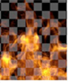

Operation
Algorithm
Description
Illustration
Example Uses
atop
Ab+B(1-a)
Shows the shape of image B, with A covering B where the images overlap.

average
(A+B)/2
The average of the two images. The result is darker than the original images.

color-burn
darken B towards A
Image B gets darker based on the luminance of A.


color-dodge
brighten B towards A
Image B gets brighter based on the luminance of A.

conjoint-over
A+B(1-a/b),
A if a>b
Similar to the over operation, except that if a pixel is partially covered by both A and B, conjoint-over assumes A completely hides B. For instance, two polygons where A and B share some edges but A completely overlaps B. Normal over produces a slightly transparent seam here.


copy
A
Only shows image A.
This is useful if you also set the mix or mask controls so that some of B can still be seen.
difference
abs(A-B)
How much the pixels differ. Also available from Merge > Merges > Absminus.


Useful for comparing two very similar images. This mode can also be used as a difference keyer.
disjoint-over
A+B(1-a)/b,
A+B if a+b<1
Similar to the over operation, except that if a pixel is partially covered by both a and b, disjoint-over assumes the two objects do not overlap. For instance, two polygons that touch and share an edge. Normal over produces a slightly transparent seam here.
This can be useful if you want to merge element a over element b, and element a has element b already held out. For example, you may have a CG character whose hair, skin, and clothing are rendered separately so that each object has the other objects held out of the render.
In this case, using the over operation would produce dark lines around the comped objects. This is because over does a hold-out of the background image, meaning the background is held out twice.
divide
A/B,
0 if A<0 and B<0
Divides the values but stops two negative values from becoming a positive number.


This does not match any photographic operation, but can be used to undo a multiply.
exclusion
A+B-2AB
A more photographic form of difference.


from
B-A
Image A is subtracted from B.


geometric
2AB/(A+B)
Another way of averaging two images.


hard-light
multiply if A<0.5,
screen if A>0.5
Image B is lit up by a very bright and sharp light in the shape of image A.


hypot
sqrt (A*A+B*B)
Resembles the plus and screen operations. The result is not as bright as plus, but brighter than screen.
Hypot works with values above 1.
This is useful for adding reflections, as an alternative to screen.
in
Ab
Only shows the areas of image A that overlap with the alpha of B. Also available from Merge > Merges > In.
Useful for combining mattes.
mask
Ba
This is the reverse of the in operation. Only shows the areas of image B that overlap with the alpha of A.


matte
Aa+B(1-a)
Premultiplied over. Use unpremultiplied images with this operation. Also available from Merge > Merges > Matte.

max
max (A,B)
Takes the maximum values of both images. Also available from Merge > Merges > Max.
This is a good way to combine mattes and useful for bringing aspects like bright hair detail through.
min
min (A,B)
Takes the minimum values of both images. Also available from Merge > Merges > Min.


minus
A-B
Image B is subtracted from A.

multiply
AB, A if A<0 and B<0
Multiplies the values but stops two negative values from becoming a positive number. Also available from Merge > Merges > Multiply.

Used to composite darker values from A with the image of B - dark gray smoke shot against a white background, for example.
This is also useful for adding a grain plate to an image regrained with F_Regrain.
out
A(1-b)
Only shows the areas of image A that do not overlap with the alpha of B. Also available from Merge > Merges > Out.

Useful for combining mattes.
over
A+B(1-a)
This is the default operation. Layers image A over B according to the alpha of image A.
This is the most commonly used operation. Used when layering a foreground element over a background plate.
overlay
multiply if B<0.5,
screen if B>0.5
Image A brightens image B.

plus
A+B
The sum of image A and B. Also available from Merge > Merges > Plus. Note that the plus algorithm may result in pixel values higher than 1.0.

Useful for compositing laser beams, but you’re better off not using this one for combining mattes.
screen
A or B ≤1? A+B-AB: max(A,B)
If A or B is less than or equal to 1 the screen else use the maximum example, resembles Plus. Also available from Merge > Merges > Screen.

This is useful for combining mattes and also for adding laser beams.
soft-light
B(2A+(B(1-AB))) if AB<1, 2AB otherwise
Image B gets lit up. Not as extreme as the hard-light operation.

stencil
B(1-a)
This is the reverse of the out operation. Only shows the areas of image B that do not overlap with the alpha of A.


under
A(1-b)+B
This is the reverse of the over operation. Layers image B over A according to the matte of image B.

xor
A(1-b)+B(1-a)
Shows both image A and B where the images do not overlap.